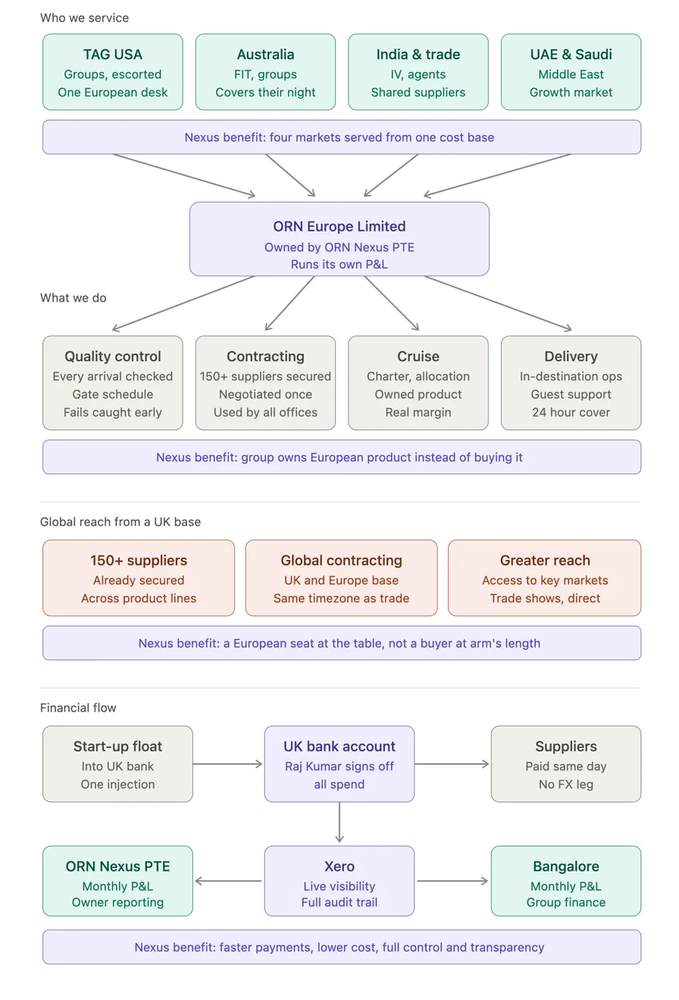

ORN Europe Limited is the group's UK and European headquarters — owned by ORN Nexus PTE and running its own profit and loss account from central London.
This is not an operational support desk. The European office takes accountability for the complete delivery chain: contracting the product, controlling the quality of every booking, delivering it in destination, and supporting the guest while they travel.
It serves four source markets — TAG USA, Australia, India and trade, and the UAE and Saudi Arabia — from a single cost base, with a supplier network already exceeding 150 across nine service categories.
The operation is based at 17 Hanover Square, Mayfair, London W1S 1BN — a prestigious West End address that carries commercial weight, not just presentational value.
The European office sits between the group's source markets and the European supplier base, owning the relationship on both sides.

The function that most directly protects the group's reputation — and the clearest change from the previous model.
Every European booking passes through a defined gate schedule before travel rather than being checked reactively when something fails. Components are verified well ahead of arrival, so problems surface days or weeks out — when they can still be fixed — instead of at the hotel desk with the guest standing there.
Each service on every booking is confirmed against a consistent set of checks: operator, contact telephone with country code, confirmation reference, time and location. Where details are missing from a supplier confirmation they are researched and completed before the booking passes the gate. Nothing travels unverified.
A rolling arrivals board is reviewed daily. Every booking arriving in the coming days is confirmed complete before the guest departs their home country.
Previously this chain was fragmented across individual resources with no single point of accountability. It now sits with one team, in one place, to one standard.
Support does not stop at confirmation. The team manages guests while they are travelling in Europe — handling changes, supplier failures and escalations in real time. Where a supplier underperforms the failure is logged, escalated and reflected in future contracting decisions, so quality control feeds directly back into commercial terms.
| Market | Coverage provided |
|---|---|
| USA (TAG) | European ground delivery, escalations, in-destination support |
| Australia | Overnight cover while Australia is closed — no gap in response |
| UAE / Middle East | European delivery for the growing Gulf outbound market |
As Australia closes, support transitions to Europe. As Europe closes it transitions onward across the network — a genuine follow-the-sun model with no market left uncovered.
| Previous model | UK / Europe headquarters |
|---|---|
| Individual operational resources | Dedicated UK/Europe operations centre |
| General booking support | End-to-end European booking ownership |
| Limited European presence | Central London headquarters, Mayfair |
| Reactive problem handling | Proactive quality and delivery control |
| Booking administration | Structured supplier reconfirmation before travel |
| Individual staff communication | Centralised monitored operational queues |
| No dedicated European telephone operation | Dedicated UK European support number |
| Limited out-of-hours structure | 24-hour support: USA, Australia, UAE |
| Operational support only | In-destination traveller support |
| Ad-hoc supplier interaction | Structured supplier management and consolidation |
| Limited contracting ownership | Full European contracting capability |
| No integrated DMC function | European DMC capability |
| Product sourced as required | 150+ supplier network across nine service categories |
| Limited financial/supplier alignment | Bookings moving to approved bona fide suppliers |
| Standard cruise sourcing | Cruise contracting, group allocation, charter development |
| Primarily operational | Operations + commercial + contracting + QC + delivery |
DMC — European ground arrangements, hotels, transport, touring and specialist product.
Contracting centre — direct relationships, preferred suppliers, rates, allocations and charter development.
Quality & delivery control — ownership of bookings before travel through structured reconfirmation.
European service centre — supporting guests in Europe and the offices in Australia, USA and the Middle East.
24-hour support — follow-the-sun coverage across USA, Australia and UAE.
Supplier & financial control — streamlining toward approved bona fide suppliers with aligned financial data.
Commercial development — using European presence and volume to improve margin and create direct product.
The Europe office has secured access to a broad panel of leading travel suppliers — enabling us to quote and deliver product within SLA, globally.
Coverage spans ocean and river cruise, rail, ferries, air, ground transport, accommodation, tour operators and DMCs, attractions and specialist holidays. This breadth lets the Europe team build and complete quotes and bookings within SLA, wherever the request originates.
| Service category | No. | What it covers |
|---|---|---|
| Ocean & river cruise | 24 | Ocean, river and expedition lines — luxury and premium ocean brands to European river and small-ship specialists |
| Rail | 4 | Rail operators and rail-holiday specialists, including high-speed cross-Channel and escorted rail journeys |
| Ferries & tunnel | 4 | Ferry operators and the Channel Tunnel for vehicle and foot-passenger crossings across Europe and Ireland |
| Flights & air | 5 | Air consolidators, seat-only specialists and airline holiday divisions for flight-inclusive itineraries |
| Car hire & transfers | 7 | Car hire, private and shared transfers, taxis, airport lounges and marine charter |
| Hotels, villas & beds | 16 | Bed banks, villa collections and aggregators giving broad hotel and self-catering inventory at trade rates |
| Tour operators & DMCs | 76 | Tour operators, destination management companies and tailor-made specialists, worldwide and regional |
| Attractions & extras | 9 | Attractions, theme parks, activity resorts and experience providers |
| Ski & specialist | 5 | Ski, snow and seasonal specialists for winter-sports and themed holidays |
| Total | 150 | Suppliers secured across all service types |
Ocean, river and expedition cruise lines — from luxury and premium ocean brands to European river and small-ship specialists.
Rail operators and rail-holiday specialists, including high-speed cross-Channel services and escorted rail journeys.
Ferry operators and the Channel Tunnel for vehicle and foot-passenger crossings across Europe and Ireland.
Air consolidators, seat-only specialists and airline holiday divisions for flight-inclusive itineraries.
Car hire, private and shared transfers, taxis, airport lounges and marine charter — the ground-transport layer of a trip.
Bed banks, villa collections and accommodation aggregators giving broad hotel and self-catering inventory at trade rates.
Tour operators, destination management companies and tailor-made specialists spanning worldwide and regional programmes.
Attractions, theme parks, activity resorts and experience providers to complete an itinerary.
Ski, snow and seasonal specialists for winter-sports and themed holidays.
The European operation has moved from fragmented operational support to an accountable structure controlling the complete delivery chain — from contract through to customer escalation.
The headquarters gives Australia, TAG USA, India and the Middle East a genuine European operations, DMC, contracting, quality control and service centre — based in central London, with a supplier network already exceeding 150 across nine service categories.